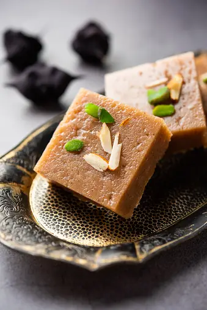
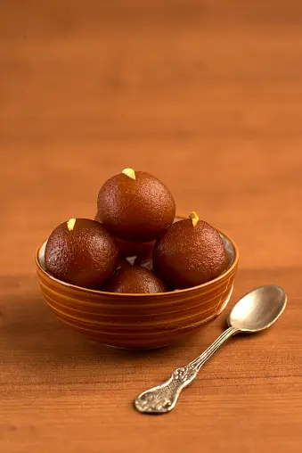

Barfi
Ingredients
- Sugar
- Milkpowder
- Milk
Recipe
- Make Mixture: Mix 2 cups milk powder, 1 cup sugar, and 1/2 cup milk.
- Cook: Stir continuously on medium heat until thick and smooth.
- Set: Pour mixture into a greased tray; spread evenly.
- Garnish: Top with chopped nuts; cool, then cut into squares.

Gulab Jamun
Ingredients
- Sugar
- Bread
- Oil
Recipe
- Make Dough: Mix milk powder, flour, baking soda, ghee, and milk; rest.
- Shape Balls: Form small, smooth, crack-free balls.
- Fry Balls: Fry until golden brown; drain excess oil.
- Make Syrup: Boil sugar, water, cardamom until sticky; soak balls.

Samosa
Ingredients
- Potatoes
- Spices
- All-purpose flour
Recipe
- Make Dough: Mix flour, water, oil, and salt; knead into a firm dough.
- Prepare Filling: Cook mashed potatoes with peas, cumin, coriander, and spices..
- Shape Samosas: Roll dough into small circles, fill with mixture,fold into triangles.
- Fry Samosas: Deep fry in hot oil until golden brown and crispy.
Motichoor Ladoo
Ingredients
- Gram flour (besan)
- Sugar
- Ghee
Recipe
- Make Batter: Mix gram flour with water to form a smooth batter.
- Fry Boondis: Fry batter through a slotted spoon in hot ghee to make tiny balls.
- Make Syrup: Boil sugar with water until sticky; add cardamom.
- Combine and Shape: Mix boondis with syrup, cool slightly, then shape into laddus.